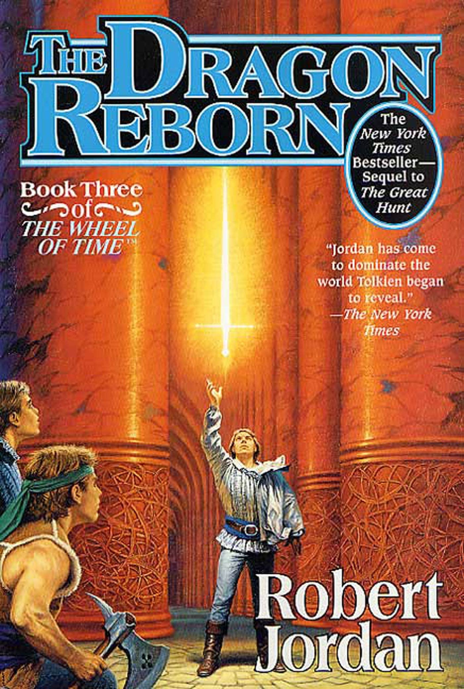

"The Dragon Reborn"
- Read on 2015-06-29
- Rating: ️️️️️
- Format: 🎧 (24 hours 48 minutes)
You should read the first book in the series, and go from there if you like the rest. If you don't, that's okay, and you can ignore all of these reviews. This is my second time through most of these.
Robert Jordan does a wonderful job of building a scene for you. He paints a picture of the people, their attire, surroundings, and mannerisms. It's easy to be immediately enveloped in these books. That said, the second half of this book felt like it was very slowly plodding towards a predictable end. That said, this book felt like it fit well with the others. It was weird that one of the main characters is absent for so much of the book. His character (as we know it) isn't of the style to be so independent. Maybe this was a gigantic leap for him. Additionally, one rather crucial character is introduced in this book, and we got to spend quite a bit of time with Mat and Perrin - both characters that I like. Nynaeve felt especially stubborn in this book, and I look forward to her loosening up a bit, which I'm not sure she'll ever do.
- Prior: The Great Hunt
- Next: The Shadow Rising